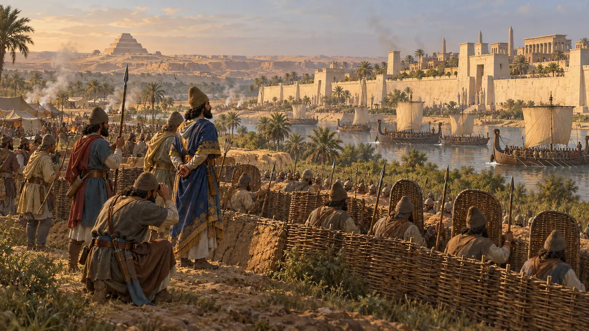
레벨 2: 창 시종 · 멤피스 · 기원전 525–524년
창 시종
나일강을 굽어보는 멤피스의 백색 성벽. 기원전 525년에 포위되었다.
백과사전 › 역사
키루스는 메디아, 리디아, 바빌론을 차지했다. 가장 오래된 왕국 이집트는 그의 아들에게 남겨졌다. 기원전 525년 캄비세스는 사막을 건너 펠루시온에서 파라오의 군대를 격파하고, 포위 끝에 멤피스를 함락했다. 그는 파라오로서 통치했고, 그리스인은 그를 광인으로 기억했다. 이집트의 기록은 다른 이야기를 전한다.
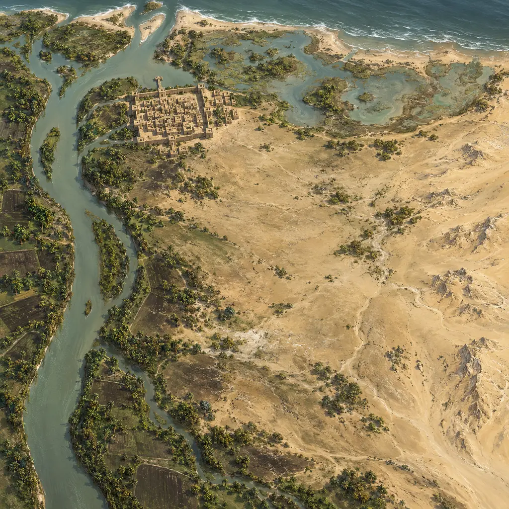
- 기원전 550년 키루스, 메디아를 차지하다
- 539 BCE 바빌론
- 기원전 530년 캄비세스 즉위
- 526 BCE 아마시스 사망
- 기원전 525년 펠루시온 전투, 멤피스 함락
- 524 BCE 아피스 매장
- 522 BCE 캄비세스 사망
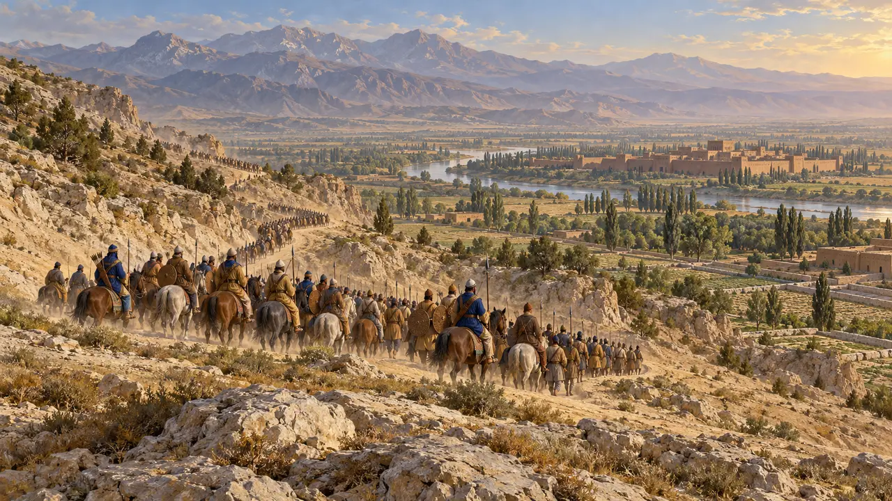
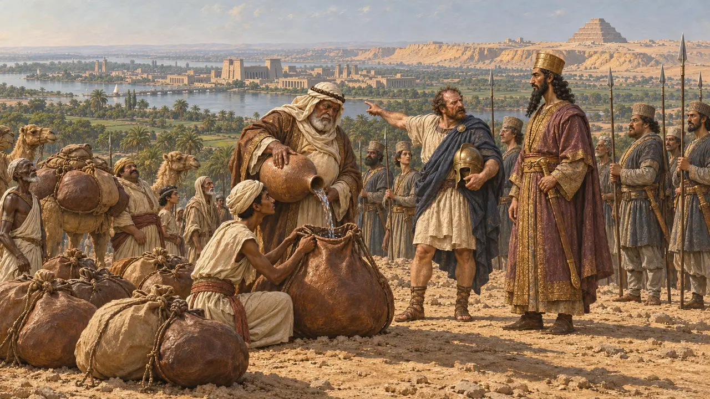
탈영병이 길을 알려 주다
고대의 전승헤로도토스는 전쟁의 이유를 여럿 드는데, 그중에는 아마시스의 딸 대신 다른 이집트 공주를 보냈다는 이야기도 있지만 그 자신도 이를 의심합니다. 더 확실한 이야기는 할리카르나소스의 파네스에 관한 것입니다. 아마시스의 용병을 이끌던 그리스인 대장인 그는 캄비세스에게로 도망쳐 사막을 건너는 방법을 알려 주었습니다.
게임에서: 파네스의 탈주 소식은 기원전 525년에 전해집니다.
Herodotus 3.1-4
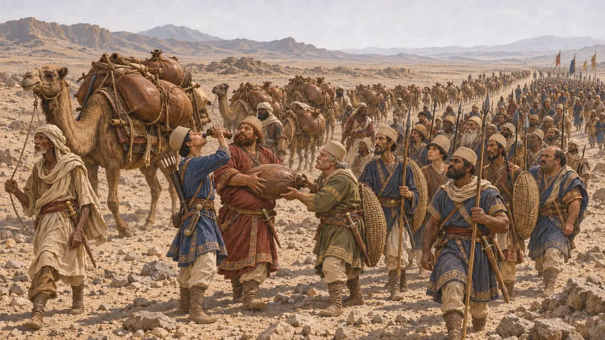
사막의 물
고대의 전승가자와 이집트 사이에는 물 없는 사막이 사흘 길이나 펼쳐져 있었습니다. 캄비세스는 아랍인의 왕과 맹약을 맺었고, 아랍 왕은 낙타에 물 가죽 부대를 싣고 사막에서 군대를 맞이했습니다. 헤로도토스는 먼 강에서 소가죽으로 만든 관을 이어 물을 끌어왔다는 이야기도 전하지만, 그 자신은 믿지 않습니다.
게임에서: 대왕의 군사들이 아랍인이 물을 대어 준 사막길을 따라 그대의 도시에 이릅니다.
Herodotus 3.4-9
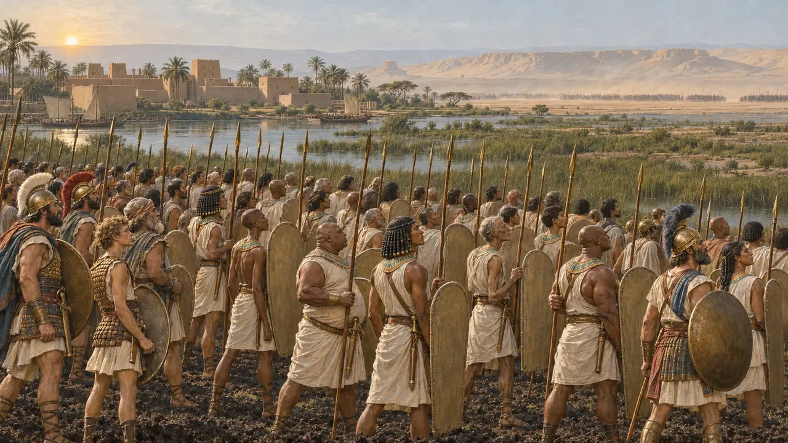
펠루시온, 기원전 525년
고대의 전승아마시스는 페르시아인이 오기 전에 죽었습니다. 왕위에 오른 지 여섯 달 된 그의 아들 프삼티크 3세는 이집트인과 그리스·카리아 용병을 이끌고 나일강의 펠루시온 하구에서 적을 맞았습니다. 용병들은 복수심에 파네스의 아들들을 전열 앞에서 죽였습니다. 격전 끝에 이집트인은 무너져 멤피스로 달아났습니다.
게임에서: Memphis opens after Pelusium, so it is fought as a memory from the top bar, on its own map of the river mouth, with Psamtik's Greeks and Carians in his line.
Herodotus 3.10-11
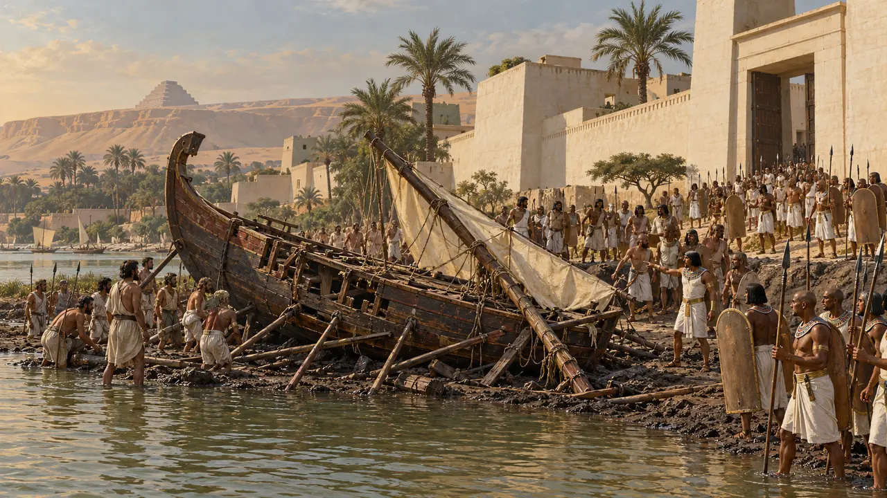
전령의 배와 포위전
고대의 전승캄비세스는 미틸레네의 배 한 척에 전령을 태워 나일강을 거슬러 보내 항복 조건을 제시했습니다. 이집트인들은 성벽 밖으로 쏟아져 나와 배를 부수고 선원들을 갈가리 찢어 죽였습니다. 멤피스는 포위되었고 마침내 항복했습니다. 리비아인과 키레네·바르카의 그리스인들은 곧바로 선물을 보내왔습니다.
게임에서: 멤피스 공방전은 사료가 전하는 그 자리, 바로 당신의 도시에서 벌어집니다.
Herodotus 3.13
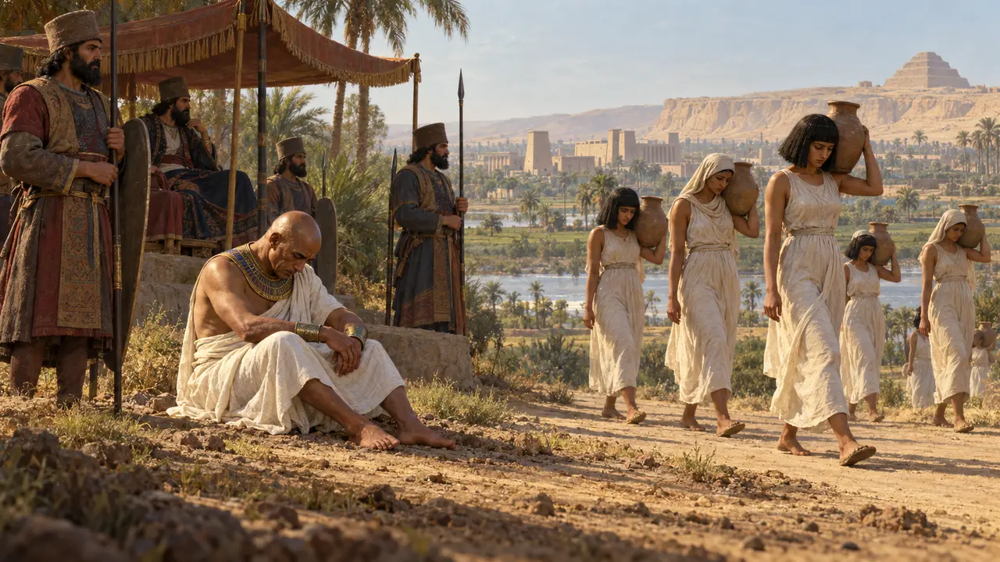
프삼티크의 시험
고대의 전승헤로도토스에 따르면 캄비세스는 프삼티크를 길가에 앉혀 두고, 노예 차림을 한 그의 딸이 지나가고 그의 아들이 처형장으로 끌려가는 모습을 보게 했습니다. 프삼티크는 눈물을 보이지 않다가, 옛 친구가 구걸하는 모습을 보고서야 울었습니다. 목숨을 건진 그는 훗날 반란을 꾀하다 처형되었습니다. 헤로도토스는 페르시아인이 대개 패배한 왕의 아들에게 통치를 맡겼다고 덧붙입니다.
Herodotus 3.14-15
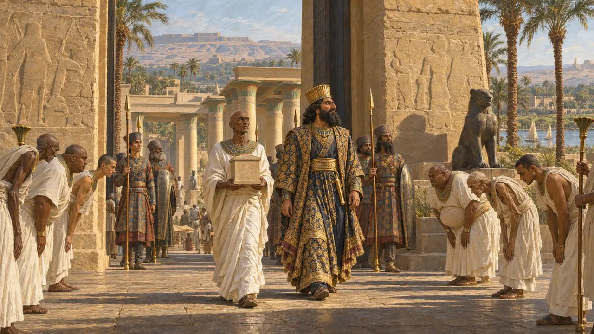
파라오 메수티라
당대 기록마지막 파라오들의 제독이었던 우자호레스네트는 자신의 조각상에, 캄비세스가 자신을 수석 의사로 삼았고 자신이 왕의 즉위명 메수티라, 곧 '라의 자손'을 지었다고 새겼습니다. 그의 청에 따라 캄비세스는 사이스의 네이트 신전에 진을 친 이방인들을 몰아내고 신전의 수입을 되돌려 주었으며, 여느 파라오처럼 그곳에서 예배했습니다.
게임에서: 당신은 새 파라오의 신하로서 다스립니다. 멤피스의 신들을 공경하십시오.
Statue of Udjahorresnet (Vatican Museums)
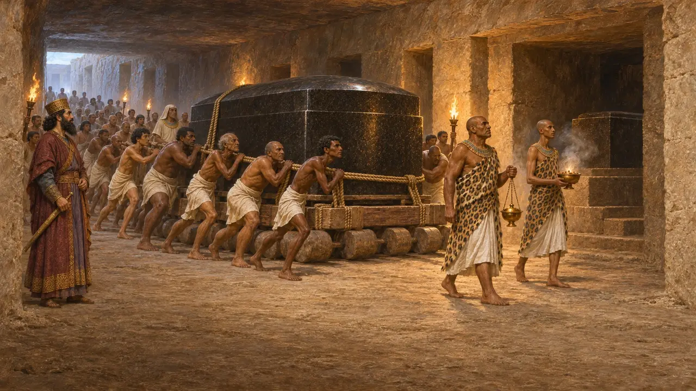
아피스 황소
분쟁 중헤로도토스는 광기에 사로잡힌 캄비세스가 신성한 아피스 황소의 허벅지를 찔러 죽였다고 말합니다. 그러나 사카라의 황소 묘실에서 나온 석비에는 캄비세스 재위 6년, 곧 기원전 524년에 왕이 하사한 화강암 관에 아피스가 예를 갖춰 매장되었다고 기록되어 있으며, 이집트 복장을 한 캄비세스가 황소 앞에 무릎 꿇은 모습도 새겨져 있습니다. 그다음 아피스는 다리우스 재위 4년까지 살았습니다. 대부분의 역사가는 헤로도토스의 이야기에 들어맞는 황소가 없다고 봅니다.
게임에서: 아피스 묘실과 엘레판티네에서 오는 화강암 운반선이 이 레벨의 대역사입니다.
Herodotus 3.27-29; Apis stelae from the Serapeum (Louvre)
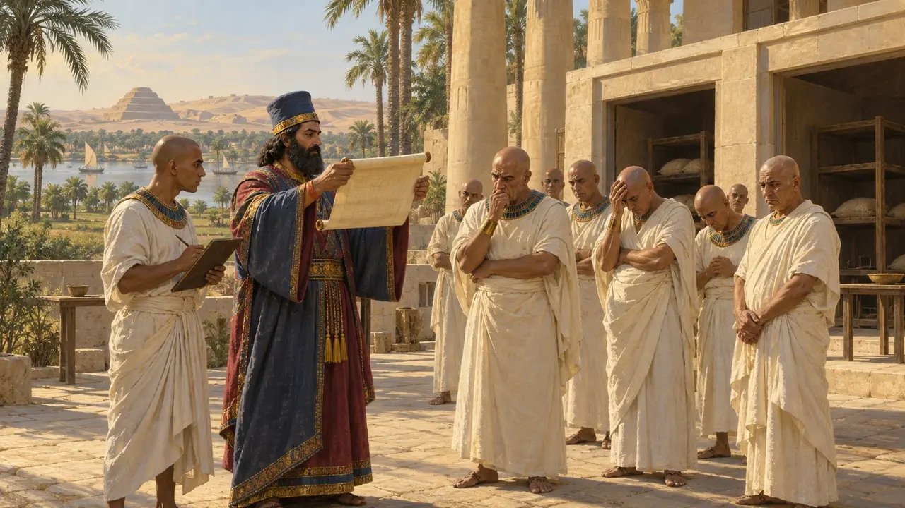
사제들이 그를 나쁘게 기억한 까닭
당대 기록수 세기 뒤 민중문자 연대기의 뒷면에 옮겨 적힌 캄비세스의 칙령은 이집트 대부분의 신전에 대한 왕실 지급을 삭감했습니다. 기원전 407년, 엘레판티네의 유대인들은 캄비세스가 왔을 때 이집트 신들의 신전은 파괴했으나 자신들의 신전은 남겨 두었다고 적었습니다. 헤로도토스에게 이야기를 전한 이들은 바로 분노한 사제들이었습니다.
Demotic Chronicle, verso (Paris); Elephantine papyri, petition of 407 BCE
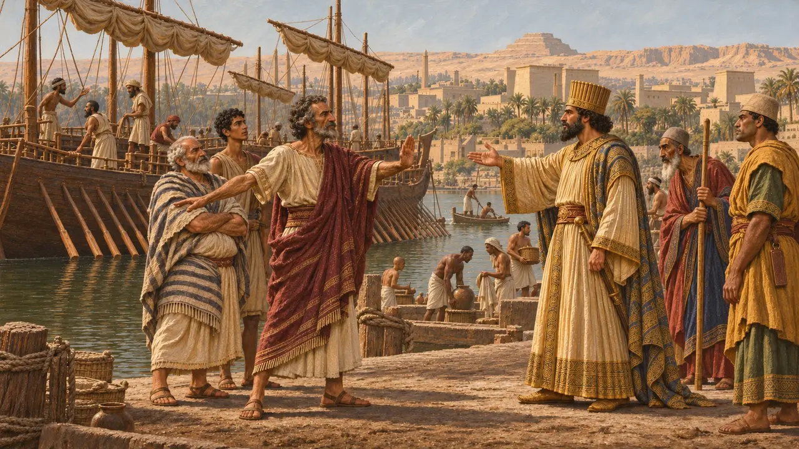
이집트 너머
고대의 전승캄비세스는 카르타고로 원정할 계획이었으나, 페니키아인이 자신들의 식민지와 싸우기를 거부했고 그들 없이는 함대가 너무 약했습니다. 그는 남쪽으로 에티오피아인을 치러 진군했지만, 식량이 떨어지자 원정군은 발길을 돌려야 했습니다.
게임에서: 이 원정들은 기원전 524년에 소식으로 당신의 도시에 전해집니다.
Herodotus 3.17-25
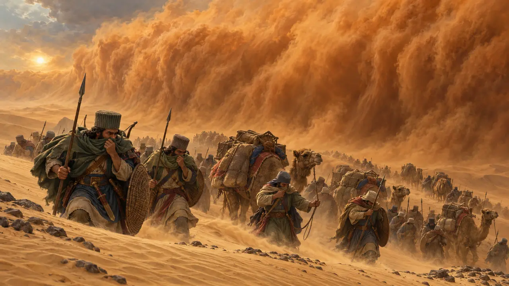
모래 속에 사라진 군대
후대의 전설헤로도토스는 오아시스 주민들에게서 암몬 신탁소를 치러 보낸 5만 명의 군대가 모래폭풍 속에 사라졌다는 이야기를 들었습니다. 탐험가들이 발견했다고 주장한 적은 있으나, 그 흔적이 입증된 적은 한 번도 없습니다.
Herodotus 3.26
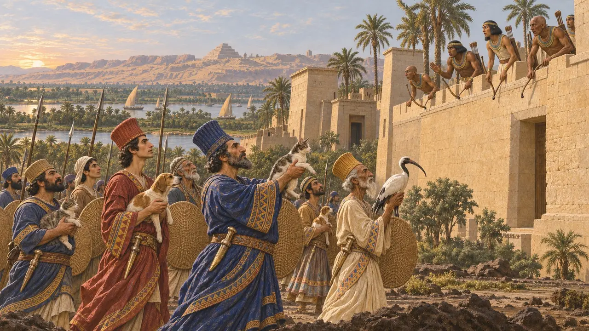
펠루시온의 고양이
후대의 전설약 700년 뒤에 글을 쓴 폴리아이노스는 캄비세스가 군대 앞에 고양이, 개, 양, 따오기를 내세웠고, 이집트인들은 신성한 동물을 다치게 할까 두려워 활을 쏘지 못했다고 전합니다. 이집트와 그 전장을 직접 찾았던 헤로도토스는 이에 대해 아무 말도 하지 않습니다.
Polyaenus, Stratagems 7.9 (2nd century CE)
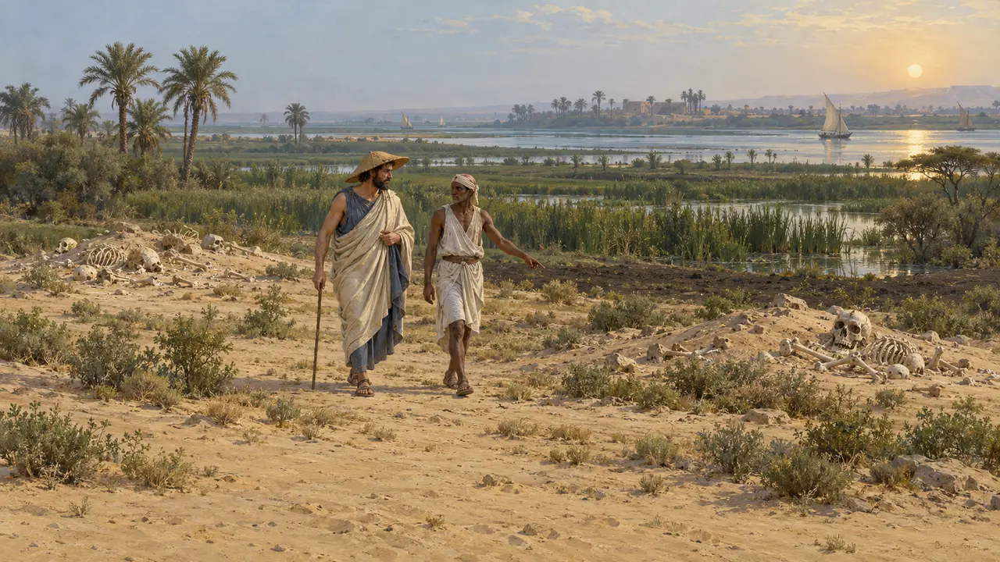
전장의 두개골
고대의 전승헤로도토스는 수십 년 뒤 펠루시온의 전장을 걸으며 여전히 두 무더기로 쌓여 있는 뼈를 보았습니다. 그의 말로는 페르시아인의 두개골은 조약돌로도 깨졌지만 이집트인의 두개골은 돌로 쳐도 좀처럼 금이 가지 않았는데, 이집트인은 햇볕 아래 머리를 밀고 다녔고 페르시아인은 펠트 모자를 썼기 때문이라고 합니다. 뼈는 그가 직접 본 것이지만, 그 이유는 그 자신의 해석입니다.
Herodotus 3.12
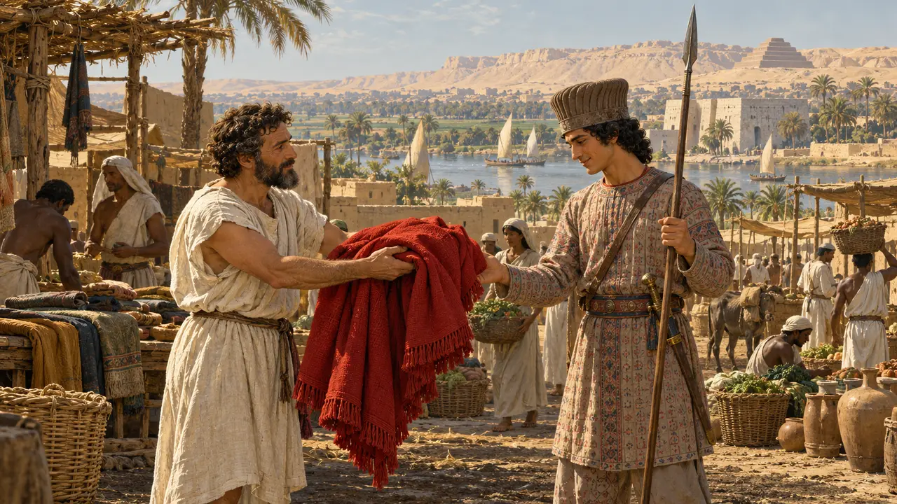
창 시종
고대의 전승멤피스에서 사모스의 실로손은 근위대의 젊은 창 시종, 히스타스페스의 아들 다리우스에게 자신의 붉은 망토를 건넸다. 몇 년 뒤 왕이 된 다리우스는 사모스를 내주어 그 은혜를 갚았다. 캄비세스는 기원전 522년 귀국길에 시리아에서 허벅지 상처로 죽었다. 다리우스 자신의 비문은 그가 죽었다고만 전하는데, 그 표현은 '자신의 죽음으로'라고도, '자신의 손으로'라고도 읽힐 수 있다.
게임에서: 플레이어는 군대의 도시를 맡은 다리우스가 됩니다. 극화임을 밝힌 각색입니다.
Herodotus 3.64-66, 3.139-141; Behistun inscription section 11
Read next: the topics of 창 시종
전투와 사건
캄비세스의 이집트 정복 · 펠루시온 전투 · 멤피스 공성 · 아피스 황소의 죽음 · 포기된 카르타고 원정 · 캄비세스의 아몬과 에티오피아 원정